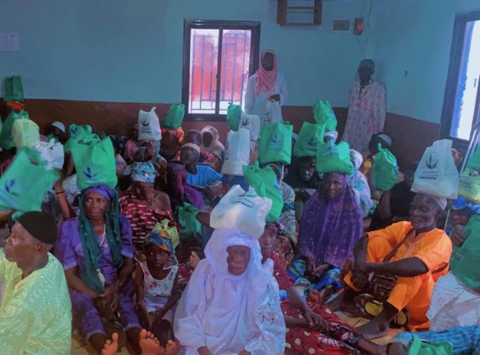
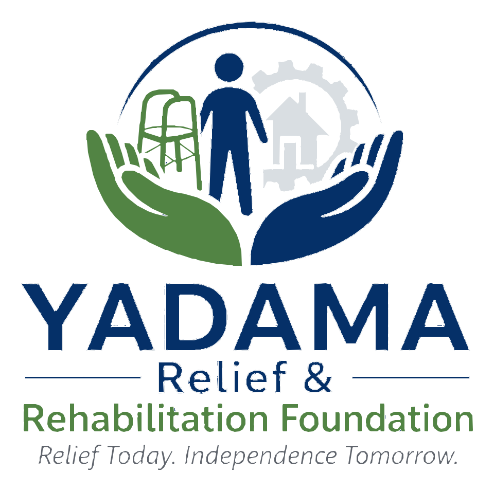
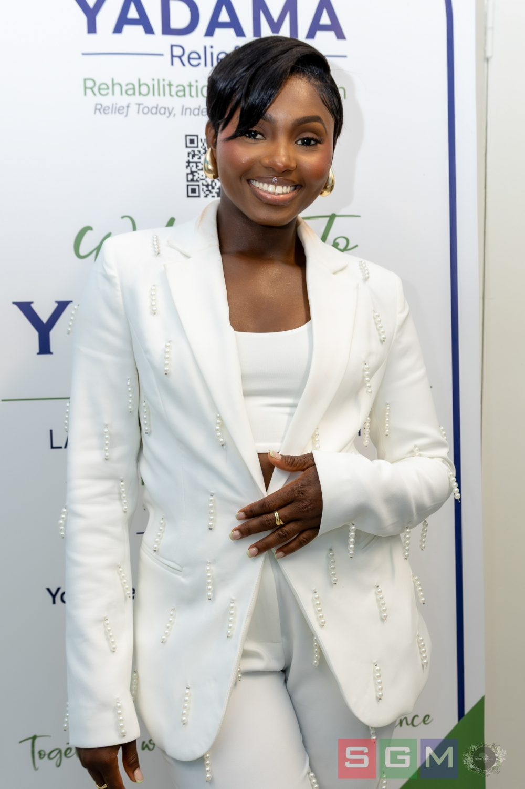

Our story
Improving health, independence and dignity through rehabilitation, practical support, education, partnerships and compassionate outreach.
Who We Are
YADAMA Relief & Rehabilitation Foundation is committed to improving health, independence and dignity for vulnerable individuals and communities through rehabilitation, practical support, education, partnerships and compassionate outreach.
Our main focus is rehabilitation and restoring independence. We aim to develop accessible rehabilitation services and long-term support for people living with disabilities, as well as those recovering from stroke or neurological conditions, and those needing hand therapy.
Alongside our rehabilitation work, we provide humanitarian and practical support where there is an identified need and where resources are available.

Our Foundation
Our primary mission is to improve access to rehabilitation support for people living with disabilities and those recovering from stroke, neurological conditions and other conditions that affect mobility, independence and participation in daily life.
We aim to support individuals through appropriate rehabilitation resources, assistive equipment, education and community-based support, working collaboratively with healthcare professionals and local organisations.
Where there is significant need, we also provide humanitarian and practical assistance, including food, clothing, essential supplies and emergency support.
A world where everyone, regardless of disability, illness or financial hardship, has access to essential support and appropriate rehabilitation services, and the opportunity to live with dignity, independence and hope.
We envision communities where people can access the support they need to recover, adapt, participate and thrive.
We believe meaningful support should go beyond simply giving. Our long-term approach is built on five things working together:
We aim to understand the needs of the people we serve, work with appropriate professionals and local organisations, provide practical resources where appropriate, and learn from every project we undertake. Our goal is to develop sustainable programmes rather than short-term interventions alone.
REACH
Five principles guide every decision we make, spelling out the word REACH — the reach we want our work to have in the lives of the people we serve.
Promoting recovery, independence, wellbeing and dignity.
Supporting people fairly and without discrimination, while recognising different needs and circumstances.
Operating transparently, ethically and responsibly.
Working with empathy and collaborating with communities, professionals and partners.
Protecting human dignity, showing kindness and inspiring hope.

Our Logo & Symbolism
The open hands represent immediate humanitarian relief, protection and care. The upright human figure represents rehabilitation, recovery, independence and restored dignity.
Together, these symbols express our complete approach: helping people not only survive hardship, but regain hope, mobility, function and self-sufficiency.

Our story
YADAMA Relief & Rehabilitation Foundation was born from a commitment to serve vulnerable individuals and communities. The journey began with a personal experience in Sierra Leone in 2022, where our founder, Adama Mansary, a UK-based Occupational Therapist, witnessed the limited availability of rehabilitation resources within a stroke rehabilitation setting.
That experience created a long-term commitment to rehabilitation and independence. The Foundation's mission was strengthened by the example of her late grandmother, Yadama, whose life was defined by kindness, generosity and service to others, and whose name the Foundation carries.
YADAMA brings these experiences together through a commitment to practical action, rehabilitation, education, partnership and humanitarian support.
Get involvedThe inspiration behind the Foundation
During my first visit to Sierra Leone in 2022, I visited the stroke rehabilitation department at a local hospital. I saw that only a small amount of rehabilitation equipment was available, and some of the equipment appeared to be old, unsuitable or no longer safe for use.
That experience stayed with me. It made me realise how important access to rehabilitation resources can be for people recovering from stroke and living with disability, and it inspired me to establish YADAMA and work towards expanding access to rehabilitation support, education and appropriate resources for people who need them most.
In loving memory
My commitment to serving vulnerable people was strengthened further on 19 February 2026, when my beloved grandmother passed away. Growing up, I watched her give selflessly to people who were poor, blind, vulnerable or simply in need of kindness. She loved other people's children as if they were her own.
She was kind, calm, honest and exceptionally generous, and she never sought recognition for the good she did. Everything I am doing today is deeply influenced by watching her serve others with compassion and humility. The Foundation carries her name, and is dedicated to her memory and the values she lived by.
Occupational Therapy
A key part of YADAMA's long-term vision is to raise awareness of Occupational Therapy. Many people are unfamiliar with it, or confuse it with Physiotherapy. Occupational Therapy focuses on helping people take part in the everyday activities that are meaningful and important to them.
Through education and community partnerships, YADAMA hopes to improve understanding of the important role Occupational Therapy can play in rehabilitation and independence.
Ready to help?
Join our growing community of donors, volunteers, and partners helping us reach more families.